R绘图 图形初阶
要点: 创建、修改、保存、组合图形，及低水平画图命令。[R In Action Chapter3]
直接截图，或者依靠菜单保存图片。也可以用命令保存图片。
#输出pdf格式
setwd("F://Temp//") #设定工作目录
pdf("pic1.pdf") # 设定文件名
attach(mtcars)
plot(wt,mpg)
abline(lm(mpg~wt))
detach(mtcars)
dev.off() #关闭绘图设备
除了pdf()，还可以使用函数win.metafile()、png()、jpeg()、bmp()、tiff()、xfig()和postscript()将图形保存为其他格式。（注意，Windows图元文件格式仅在Windows系统中可用。）
png函数技巧: 把height width和res增大同样比例试一试。发现图片正常，而且清晰度提高了。
png("type.png",width=600*3,height=3*600,res=72*3) #否则字体大小会变得很不协调
R语言的高质量图形渲染库Cairo
#输出高清pdf
library(Cairo)
Cairo.capabilities() #检查Cairo的兼容性
# png jpeg tiff pdf svg ps x11 win raster
# TRUE TRUE FALSE TRUE TRUE TRUE TRUE FALSE TRUE
CairoPDF(file="xx.pdf",width=10,height=10)
plot(c(1,2))
#画图语句...
dev.off()
Cairo使用起来非常简单，和基础包grDevices中的函数对应：
CairoPNG: 对应grDevices:png()
CairoJPEG: 对应grDevices:jpeg()
CairoTIFF: 对应grDevices:tiff()
CairoSVG: 对应grDevices:svg()
CairoPDF: 对应grDevices:pdf()
我常用的图形输出，就是pdf和png。
1.图形参数设定的两种方式
(1)通过par()指定，除非被再次修改，该设定在session结束前一直有效。该语句可一次性定义好，或使用多次。
> par("mar") #[1] 5.1 4.1 4.1 2.1 用于查询当前"mar"参数的值。
> oldPar=par(no.readonly=T) #返回一个当前图形参数列表，可用于恢复设定: par(oldPar)
oldPar=par(no.readonly = T) #记录当前设定. 或简写 oldPar=par()
par(lty=2,pch=17) #修改设定：line type将默认实线改为虚线，pch将默认的点符号改为实心三角
plot(x,y,type="b")
par(oldPar) #恢复设定
plot(x,y,type="b")
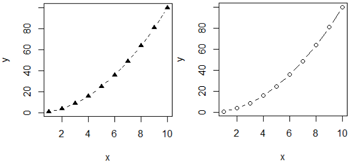
(2)通过高级绘图函数直接定义，仅对当前图形有效。
plot(x,y,type="b",lty=2,pch=17)
(3) 除了par函数，还有options()函数也是如此
op = options(digits = 2)
(a = 1.34556) # 1.3
options(op)
(a = 1.34556) # 1.34556
2.函数par()中的参数可以分为三大类：
字体、颜色、线条、坐标轴、标题
(1)只能读取，不能进行设置。包括参数cin，cra，csi，cxy， din。
(2)只能通过函数par()进行设置。包括参数：
"ask",
"fig", "fin",
"lheight",
"mai", "mar", "mex", "mfcol", "mfrow", "mfg",
"new",
"oma", "omd", "omi",
"pin", "plt", "ps", "pty",
"usr",
"xlog", "ylog"
(3)剩下的参数除了函数par()外，还可以通过各种高级绘图函数进行设置，如函数plot，points，lines，abline，title，text，axis，image，box，contour，rect，arrows等。
> ?par #查看详细文档。或参考 R中设置图形参数--par()参数详解.html
cex: 缩放倍数，默认是1；
lwd: 线条宽度。
pch: 指定绘制时使用的符号(见图fig1)
x = 1:6
y = 5:1
# 生成25个点的网格数据
xy = expand.grid(y=y,x=x)
xy=head(xy,n=26)
# 画25种pch
plot(xy$x-6,xy$y,pch=0:25,col="red",cex=2,
xlim=c(-5.5,6),ylim=c(-7,6), # 指定坐标轴范围
ann=F,axes=F) # 这两个参数去掉原有边框
text(3-6,6,"plotting ‘character’: pch=")
text(xy$x+0.4-6,xy$y,as.character(0:25))
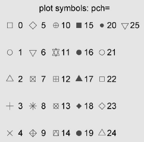
fig1 对于pch的21-25，还可以指定边界颜色(col=)和填充色(bg=).
lty: 指定线条类型(见图fig2)。Line types can either be specified as an integer (0=blank, 1=solid (default), 2=dashed, 3=dotted, 4=dotdash, 5=longdash, 6=twodash) or as one of the character strings "blank", "solid", "dashed", "dotted", "dotdash", "longdash", or "twodash", where "blank" uses ‘invisible lines’ (i.e., does not draw them).
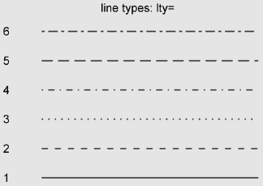
fig2 线条类型-6种lty
| 参 数 | 描 述 |
|---|
| col | 默认的绘图颜色。某些函数（如lines和pie）可以接受一个含有颜色值的向量 并自动循环使用。例如，如果设定col=c("red", "blue")并需要绘制三条线，则第一条线将为红色，第二条线为蓝色，第三条线又将为红色 |
| col.axis | 坐标轴刻度文字的颜色 |
| col.lab | 坐标轴标签（名称）的颜色 |
| col.main | 标题颜色 |
| col.sub | 副标题颜色 |
| fg | 图形的前景色 |
| bg | 图形的背景色 |
在R中，可以通过颜色下标、颜色名称、十六进制的颜色值、RGB值或HSV值来指定颜色。举例来说，col=1、col="white"、col="#FFFFFF"、col=rgb(1,1,1)和col=hsv(0,0,1)都是表示白色的等价方式。
函数rgb()可基于红—绿—蓝三色值生成颜色，而hsv()则基于色相—饱和度—亮度值来生成颜色。
显示所有颜色
colors() #657种颜色："white" "aliceblue" "antiquewhite" ...
很好很强大的 R颜色列表.pdf
R自带配色方案
R自带很多套连续颜色集合，包括rainbow()、heat.colors()、terrain.colors()、topo.colors()以及cm.colors()
rainbow(10)可以生成10种连续的“彩虹型”颜色。多阶灰度色可使用gray()函数生成。这时要通过一个元素值为0和1之间的向量来指定各颜色的灰度。gray(0:10/10)将生成10阶灰度色。
n=10
mycolors=rainbow(n)
pie(rep(1,n), labels=mycolors, col=mycolors)
mygrays=gray(1:n/n)
pie(rep(1,n), labels=mygrays, col=mygrays)
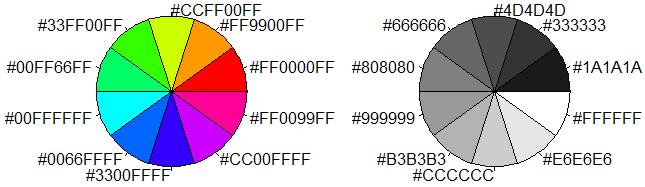
par(mfrow=c(2,2), mai=c(0.1,0.4,0.2,0.1))
#mfrow设置图的行列数
# mai设置边距 c(bottom, left, top, right)
barplot(rep(1,6), col= heat.colors(6), main="heat")
barplot(rep(1,6),col=terrain.colors(6), main="terrain")
barplot(rep(1,6),col=topo.colors(6), main="topo")
barplot(rep(1,6),col=cm.colors(6), main="cm")
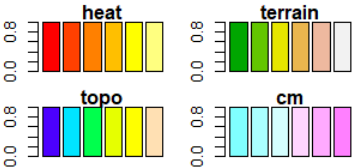
#画一个色环(未展示)
n = 1000
#png("rainbow.disc.png", bg = "transparent")
par(mar = c(0,0,0,0))
pie(rep(1,times=n),labels="",col=rainbow(n),border=rainbow(n))
#dev.off()
#五个调色板产生的颜色对比如下：
#定义画图函数
draw1=function(f,n,main=""){
barplot(rep(1,times=n),
axes=FALSE,main=main,
col=f(n),border=f(n) );
if(n<=20)box()
}
#批量调用画图函数
draw2=function(n){
par(mfrow=c(5,1));
par(mar=c(0.3,0.5,2,0.5));par(xaxs="i", yaxs="i")
#
draw1(rainbow,n,"Rainbow colors")
draw1(heat.colors,n,"heat.colors")
draw1(terrain.colors,n,"terrain.colors")
draw1(topo.colors,n,"topo.colors")
draw1(cm.colors,n,"cm.colors")
}
#left
draw2(10000)
#right: 如果只需要10中颜色
draw2(10)
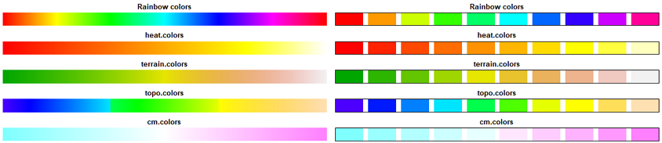
colorRampPalette() 自定义颜色组
可以用颜色名称通过colorRampPalette函数产生自己的颜色系列。colorRampPalette的参数如下：
colorRamp(colors, bias = 1, space = c("rgb", "Lab"), interpolate = c("linear", "spline"))
colorRampPalette(colors, ...)
par(mfrow=c(2,1),mai=c(0.2,0.4,0.2,0.1))
#补齐中间的颜色，获得指定数量的渐变色
colorRampPalette(brewer.pal(9,"Blues"))(100) -> color #从正黄色到正蓝色直接过度10个颜色
plot(1:100,col=color,pch=20,cex=2)
barplot(rep(1,30),col=brewer.pal(9,"Blues"))#如果颜色不够，则循环使用

#自定义颜色组2
n=1000
mycolors = colorRampPalette(c("yellow", "red","black"))(n)
barplot(rep(1,times=n),col=mycolors,border=mycolors,axes=FALSE); box()
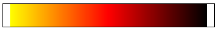
RColorBrewr颜色扩展包
RColorBrewr包提供了3套好看的配色方案。
（1）连续型seq类(sequential)，渐变，适用于从低到高排序明显的数据，浅色数字小，深色数字大。
（2）极端型div类(Diverging)，生成深色强调两端、浅色表示中部的颜色。适用于对极值和中间值比较注重的数据，可用来标注数据中的离群点。
（3）离散型qual类(Qualitative)，生成彼此差异明显的颜色，通常用来标记分类数据。
library(RColorBrewer)
brewer.pal.info # 查看有哪些调色板
display.brewer.all() #全部颜色组合名字
display.brewer.all(type="seq")# 有9种颜色
display.brewer.all(type="div")# 有11种颜色
display.brewer.all(type="qual")# 颜色种类不确定
#brewer.pal（9, "某组渐变颜色的名称"）来获取该组渐变色的全部9种颜色
barplot(rep(1,8),col=brewer.pal(8,"Set2"))
barplot(rep(1,6),col=brewer.pal(8,"Set2")[2:7]) #第二到第七个颜色。
barplot(1:5,col=RColorBrewer::brewer.pal(n = 5,name = "Set2")) #无图
brewer.pal.info # 查看有哪些调色板
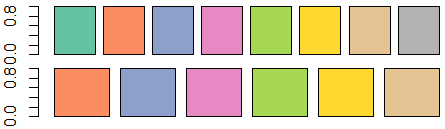
| 参 数 | 描 述 |
|---|
| cex | 表示相对于默认大小缩放倍数的数值。默认大小为1，1.5表示放大为默认值的1.5倍，0.5表示缩小为默认值的50%，等等 |
| cex.axis | 坐标轴刻度文字的缩放倍数。类似于cex |
| cex.lab | 坐标轴标签（名称）的缩放倍数。类似于cex |
| cex.main | 标题的缩放倍数。类似于cex |
| cex.sub | 副标题的缩放倍数。类似于cex |
用于指定字体族、字号和字样的参数
| 参 数 | 描 述 |
|---|
| font | 整数。用于指定绘图使用的字体样式。1=常规，2=粗体，3=斜体，4=粗斜体，5=符号字体（以Adobe符号编码表示） |
| font.axis | 坐标轴刻度文字的字体样式 |
| font.lab | 坐标轴标签（名称）的字体样式 |
| font.main | 标题的字体样式 |
| font.sub | 副标题的字体样式 |
| ps | 字体磅值（1磅约为1/72英寸）。文本的最终大小为 ps*cex |
| family | 绘制文本时使用的字体族。标准的取值为serif（衬线）、sans（无衬线）和mono（等宽） |
#左图
plot(0:4,type="n",xlab = NA,ylab=NA,axes=F) #画一个空图形
text(2,4,label="font=1 正常体",font=1)
text(2,3,label="font=2 粗体",font=2)
text(2,2,label="font=3 斜体",font=3)
text(2,1,label="font=4 粗斜体",font=4)
#右图
plot(0:4,type="n",xlab = NA,ylab=NA,axes=F) #画一个空图形
text(2,4,label="cex=1 font=1 正常体",font=1,cex=1)
text(2,3,label="cex=0.5 粗体",font=2,cex=0.5)
text(2,2,label="cex=1.5 font=3 斜体",font=3,cex=1.5)
text(2,1,label="cex=2 font=4 粗斜体",font=4,cex=2)
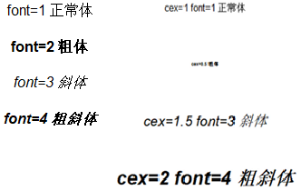
执行如下命令：
par(font.lab=3, cex.lab=1.5, font.main=4, cex.main=2)
之后创建的所有图形都将拥有斜体、1.5倍于默认文本大小的坐标轴标签（名称），以及粗斜体、2倍于默认文本大小的标题。
(1)windows下使用windowsFont()函数来创建映射，
windowsFonts(
A=windowsFont("Arial Black"),
B=windowsFont("Bookman Old Style"),
C=windowsFont("Comic Sans MS")
)
#之后，即可使用A、B、C作为family的取值。
#比如使用 par(family="A") 将指定Arial Black作为绘图字体
par(family="A")
plot(1:10,main="plot") 坐标轴、标题的字体都是粗体了。
在Mac下，请改用 quartzFonts()函数。
输出pdf、PostScript格式，则修改字体相对简单。
pdf则直接用如下函数找出系统可用字体，
names(pdfFonts())
# [1] "serif" "sans" "mono"
# [4] "AvantGarde" "Bookman" "Courier"
#...
#然后使用
pdf(file="myplot.pdf", family="mono") #来生成图形。
plot(1:10,main="test")
dev.off()
PostScript格式输出，对应函数为 names(postscriptFonts())和postscript(file="myplot.ps", family="fontname")
| 参 数 | 描 述 |
|---|
| pin | 以英寸表示的图形尺寸（宽和高） |
| mai | 以数值向量表示的边界大小，顺序为“下、左、上、右”，单位为英寸 |
| mar | 以数值向量表示的边界大小，顺序为“下、左、上、右”，单位为英分*。默认值为c(5, 4, 4, 2) + 0.1 |
*一英分等于十二分之一英寸。——译者注
oldPar=par(no.readonly = T) #记录当前设定
par(pin=c(2,4), mai=c(1.5,1.5,1,0.2)) #2 inch宽，4英寸高。图形边界(第一个底部，顺时针)
par(lwd=2, cex=1.5) #线条宽度是默认的2倍，符号是默认的1.5倍
par(cex.axis=0.75, font.axis=3) #坐标轴文本斜体、缩小为默认75%大小
x=1:10
plot(x,x*x, type="b", pch=19, lty=2,col="red") #红色实心圆圈和虚线
plot(x,x*x, type="b", pch=23, lty=6,col="blue", bg="green") #绿色填充的绿色菱形加蓝色边框和蓝色虚线
par(oldPar) #恢复设定
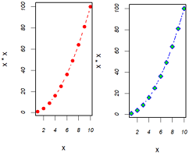
R plot中包含两类边界:margin和oma[Origin here]，可以在画图前通过par()函数的参数分别设置。mar=设置margin，oma=设置outer margin area。参数都是4参数向量c(bottom, left, top, right)。比如 par(mar=c(4,0,0,0))表示仅底部留下4行空白，其他地方不留白。
也可以使用omi=和mai=来设定，不过单位是inches，不再是lines。
#用box()定边界mar和oma
# Margins area
par(oma=c(3,3,3,3))# all sides have 3 lines of space
par(mar=c(5,4,4,2) + 0.1)
# Plot
plot(0:10, 0:10, type="n", xlab="X", ylab="Y") # type="n" hides the points
# Place text in the plot and color everything plot-related red
text(5,5, "Plot", col="red", cex=2)
box("plot", col="red") #绘图区只是坐标轴围起来的部分
# Place text in the margins and label the margins, all in forestgreen
mtext("Margins", side=3, line=2, cex=2, col="forestgreen")
mtext("par(mar=c(b,l,t,r))", side=3, line=1, cex=1, col="forestgreen")
mtext("Line 0", side=3, line=0, adj=1.0, cex=1, col="forestgreen")
mtext("Line 1", side=3, line=1, adj=1.0, cex=1, col="forestgreen")
mtext("Line 2", side=3, line=2, adj=1.0, cex=1, col="forestgreen")
mtext("Line 3", side=3, line=3, adj=1.0, cex=1, col="forestgreen")
box("figure", col="forestgreen") #这是figure区域
# Label the outer margin area and color it blue
# Note the 'outer=TRUE' command moves us from the figure margins to the outer margins.
mtext("Outer Margin Area", side=1, line=1, cex=2, col="blue", outer=TRUE)
mtext("par(oma=c(b,l,t,r))", side=1, line=2, cex=1, col="blue", outer=TRUE)
mtext("Line 0", side=1, line=0, adj=0.0, cex=1, col="blue", outer=TRUE)
mtext("Line 1", side=1, line=1, adj=0.0, cex=1, col="blue", outer=TRUE)
mtext("Line 2", side=1, line=2, adj=0.0, cex=1, col="blue", outer=TRUE)
box("outer", col="blue") #这是outer区域，也最大
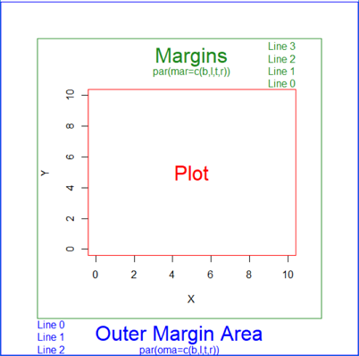
bty(box type)6种字符:o" (the default), "l", "7", "c", "u", or "]"。可以用于plot()中，也可以用于box()中。
par(mfrow=c(2,6), mar=c(0.5,0.5,4,0.5))
for(i in c('o','l','7','c','u',']')){
plot(c(1),xaxt='n',yaxt='n', #不显示坐标轴
bty=i,main=paste0('bty="',i,'"')) #bty可用于plot()中
}
par(mar=c(4,0.5,0,0.5))
for(i in c('o','l','7','c','u',']')){
plot(c(1),col="green",
axes=F, #不显示坐标轴
#xaxt='n',yaxt='n',
ann=T) #F则不显示轴标签和标题
box(col="red", bty=i,main=paste0('bty="',i,'"')) #bty也可用于box()中
}
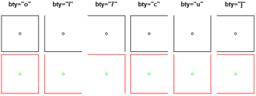
x=1:10
plot(x,x*x, type="b",
col="red",lty=2,pch=2,lwd=2,
main="This is main",
sub="This is sub",
xlab="X(x axis)", ylab="x*x(y axis)",
xlim=c(0,10),ylim=c(0,100)
)
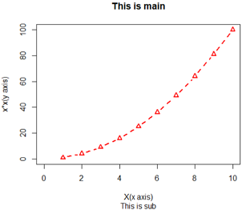
并非所有函数都支持这些选项。请参考帮助文档。
从更精细的控制和模块化的角度考虑，你可以使用本节余下部分描述的函数来控制标题、坐标轴、图例和文本标注的外观。
某些高级绘图函数已经包含了默认的标题和标签。你可以通过在plot()语句或单独的par()语句中添加ann=FALSE来移除它们。
#plot(1:10) #带xy轴标签，会和title设置的标题重叠
plot(1:10,ann=F) #ann=F则去掉默认坐标轴标签和所有title
title(main="My title", col.main="red",
sub="my sub-title", col.sub="blue",
xlab='my x label', ylab='my y lable',
col.lab="green",cex.lab=0.75) #label标签绿色，标签是默认大小的75%
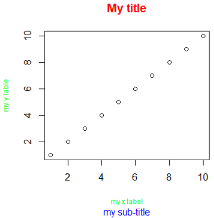
| 参 数 | 描 述 |
|---|
| side | 一个整数，表示在图形的哪边绘制坐标轴（1=下，2=左，3=上，4=右） |
| at | 一个数值型向量，表示需要绘制刻度线的位置 |
| labels | 一个字符型向量，表示置于刻度线旁边的文字标签（如果为NULL，则将直接使用at中的值） |
| pos | 坐标轴线绘制位置的坐标（即与另一条坐标轴相交位置的值） |
| lty | 线条类型 |
| col | 线条和刻度线颜色 |
| las | 标签是否平行于（=0）或垂直于（=2）坐标轴 |
| tck | 刻度线的长度，以相对于绘图区域大小的分数表示（负值表示在图形外侧，正值表示在图形内侧，0表示禁用刻度，1表示绘制网格线）；默认值为-0.01 |
| (…) | 其他图形参数 |
创建自定义坐标轴时，要禁用高级绘图函数自动生成的坐标轴。
参数 axes=F将禁用全部坐标轴（包括坐标轴框架线，除非添加了参数 frame.plot=T）。
参数 xaxt="n"和yaxt="n"将分别禁用X和Y轴（会留下框架线，只是去除了刻度）。
#综合实例：绘制带有双y坐标轴的图形
x=c(1:10)
y=x
z=10/x
opar=par(no.readonly = T)
par(mar=c(5,4,4,8)+0.1) #增加边界大小
plot(x,y,type="b", #绘制x对y的点图
pch=21,#pch: plot character
col="red",yaxt="n", #yaxt不要y轴刻度
lty=3,ann=F) #ann是不要所有默认的标题和标签
#
lines(x,z,type="b",pch=22,col="blue",lty=2) #绘制x对10/x的点图，蓝色
#axis第一个参数表示位置 1=below, 2=left, 3=above and 4=right.
axis(2,at=x,labels=x,col.axis="red",las=0) #自定义坐标轴2左侧，las=0垂直于轴，2平行于轴
axis(4,at=z,labels=round(z,digits=2),
col.axis="blue",las=2,cex.axis=0.7,tck=-0.02) #自定义坐标轴4右侧; tck刻度长度
mtext("y=1/x",side=4,line=3,cex.lab=1,las=2,col="blue") #图外右侧添加文字；las=2垂直于轴
title("An example of creative axes", xlab="X values", ylab="Y=X") #标题和坐标轴标签
par(opar)
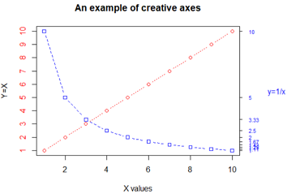
除lines()和mtext()外上文都讨论过了。
lines()向现有图形添加线元素，比如在一幅图画两条或更多曲线。
mtext()用于在图形边界添加文本。
隐藏坐标轴刻度col.ticks = "transparent"，设置轴(col)、刻度标签(col.axis)的颜色
plot(NA, xlim=c(-5,6), ylim=c(-7,6),
#xaxt='n', yaxt='n', #分别不要x或y坐标
axes=F,#不要坐标和边框
ann=F) #不要坐标标签和标题
# 画通过原点的坐标轴
axis(1,c(-5,0,6),pos=0, # 确定轴的坐标为0
col.ticks = "transparent",#刻度透明，即隐藏掉
col="grey",col.axis="black",
hadj=-1,#水平调整标签位置，正负号表反向移动方向
padj=-1.5) # 调整刻度名与轴之间的距离
axis(2,c(-7,0,6),pos=0,
col.ticks = "transparent",col="grey",col.axis="black",
hadj=1,padj=1.5)
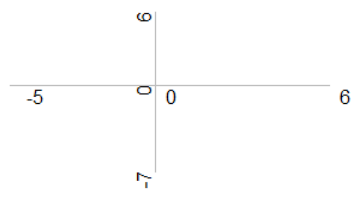
次要刻度线
要创建次要刻度线，需要使用Hmisc包中的minor.tick()函数。
library(Hmisc)
minor.tick(nx=n,ny=n,tick.ratio=0.5) #tick.ratio=0.5 长度为主刻度线的一半
#nx和ny指定主刻度线之间细分几个区间。
#当前的主刻度线长度获取
par("tck")
调整轴元素之间的距离：mgp=c()
mgp=c(2.5,1,0) #坐标轴各部件的位置。
第一个元素为坐标轴位置到坐标轴标签的距离，以文本行高为单位。
第二个元素为坐标轴位置到坐标刻度标签的距离。
第三个元素为坐标轴位置到实际画的坐标轴的距离，通常是0。
d=c(1)
par("mgp") #默认[1] 3 1 0
par(mfrow=c(3,3), mar=c(4,4,1,1)) #三行三列
#1 坐标轴标签和轴距离
plot(d,xlab="mgp=c(3,1,0)") #control
plot(d,mgp=c(2,1,0),xlab="mgp=c(2,1,0)") #坐标轴标签靠近轴
plot(d,mgp=c(-1,1,0),xlab="mgp=c(-1,1,0)") #坐标轴标移到另一侧:warnings符号不同
#2 刻度标签
plot(d,mgp=c(2,1,0),xlab="mgp=c(2,1,0)") #control
plot(d,mgp=c(2,0,0),xlab="mgp=c(2,0,0)") #刻度标签靠近轴
plot(d,mgp=c(2,-1,0),xlab="mgp=c(2,-1,0)") #刻度标签移到轴另一侧:warnings符号不同
#3 刻度位置
plot(d,mgp=c(2,1,0),xlab="mgp=c(2,1,0)") #control
plot(d,mgp=c(2,1,1),xlab="mgp=c(2,1,1)") #刻度远离轴
plot(d,mgp=c(2,1,-1),xlab="mgp=c(2,1,-1)") #刻度内移：warnings符号不同

坐标轴标签倾斜: srt=45
或者屏蔽默认坐标轴(xaxt="n")，重绘一个满足自己要求的坐标轴。
labs = paste(names(table(mtcars$cyl)), "cylinders")
#返回值是条形图的x坐标
xPos = barplot(table(mtcars$cyl), xaxt="n") #xaxt="n"不要x坐标轴
text(x=xPos, y=-0.5, labels=labs,
cex=0.8, #字体是默认的倍数
col="navyblue",
xpd=TRUE, #允许绘制在绘图区外
adj=1, #adj=1右上对齐
srt=30) #倾斜30度
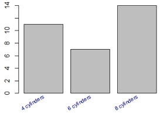
对数坐标轴 log="xy"
参考文章(Philip Brennecke, NM2013 Fig 3)，以下R代码改写自其补充材料2。
#数据示例
meansHeLa[1:3]
# 5_8S_rRNA 7SK A2M
#14.37722513 0.93673966 0.06131997
cv2HeLa[1:3]
#5_8S_rRNA 7SK A2M
# 8.465926 4.789838 28.000000
#对数坐标轴，定义为对数，然后手工添加轴刻度
plot( NULL, xaxt="n", yaxt="n",
log="xy", xlim = c( 1e-1, 3e5 ), ylim = c( .005, 100 ),
xlab = "average normalized read count",
ylab = "squared coefficient of variation (CV^2)" )
axis( 1, 10^(-1:5), c( "0.1", "1", "10", "100", "1000",
expression(10^4), expression(10^5) ) ) #x轴数学符号
axis( 2, 10^(-2:2), c( "0.01", "0.1", "1", "10" ,"100"), las=2 ) #y轴数字
abline( h=10^(-2:1), v=10^(-1:5), col="#D0D0D0", lwd=2 ) #背景灰线
# Plot the plant genes, use a different color if they are highly variable
points( meansHeLa, cv2HeLa, pch=20, cex=.2, col="#70500040")
#col = ifelse( p < .1, "#C0007090", "#70500040" ) ) #可以根据p值(提前计算)选择颜色
#因为缺少上文数据，下列代码无法运行，仅供欣赏
# Add the technical noise fit, as before
xg <- 10^seq( -2, 6, length.out=1000 )
lines( xg, coefficients(fit)["a1tilde"] / xg + a0, col="#FF000080", lwd=3 )
# Add a curve showing the expectation for the chosen biological CV^2 thershold
lines( xg, psia1theta/xg + coefficients(fit)["a0"] + minBiolDisp,
lty="dashed", col="#C0007090", lwd=3 )
# Add the normalised ERCC points
points( meansERCC, cv2ERCC, pch=20, cex=1, col="#0060B8A0" )
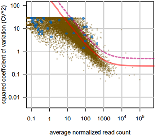
x=1:10
plot(x,x*x)
abline(h=36,v=6) #画两条线
#也可以添加很多条线,并指定线条类型、颜色、宽度
abline(h=c(10,50,100), lty=2, col="red",lwd=0.5) #三条red虚横线，宽度是一半
abline(v=seq(0,10,2), lty=2, col="grey",lwd=0.5) #n条灰色虚竖线，宽度是一半
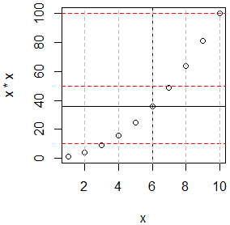
| 参 数 | 描 述 |
|---|
| location | 有许多方式可以指定图例的位置。你可以直接给定图例左上角的x、y坐标，也可以执行locator(1)，然后通过鼠标单击给出图例的位置，还可以使用关键字bottom、bottomleft、left、topleft、top、topright、right、bottomright或center放置图例。如果你使用了以上某个关键字，那么可以同时使用参数inset=指定图例向图形内侧移动的大小（以绘图区域大小的分数表示） |
| title | 图例标题的字符串（可选） |
| legend | 图例标签组成的字符型向量 |
| ncol | 图例的列数目。如果horiz为true，则此项无意义。 |
| … | 其他选项。如果图例标示的是颜色不同的线条，需要指定col=加上颜色值组成的向量。如果图例标示的是符号不同的点，则需指定pch=加上符号的代码组成的向量。如果图例标示的是不同的线条宽度或线条类型，请使用lwd=或lty=加上宽度值或类型值组成的向量。要为图例创建颜色填充的盒形（常见于条形图、箱线图或饼图），需要使用参数fill=加上颜色值组成的向量 |
其他图例参数，bty指定盒子样式，bg指定背景色，cex指定大小，text.col指定文本颜色。
horiz=T将会水平放置图例，默认是竖直放置。更多细节参考 help(legend)
x=1:10;y=x;
z=10/x;
opar=par(no.readonly = T)
#par(lwd=2, cex=1, font.lab=2)
par(mai=c(2,1,1,0.5))
plot(x,y,type="b",
pch=15, lty=1, col="red", ylim=c(0,10),
main="X vs. Y",
mgp=c(1.4,0.5,0), #坐标轴标签、刻度标签偏移，坐标轴偏移（默认为0）
xlab="X value",ylab="Y value")
lines(x,z,type="b",
pch=17,lty=2,col="blue")
abline(h=c(3), lwd=1.5, lty=2, col="grey") #横虚线
library("Hmisc")
minor.tick(nx=5,ny=5,tick.ratio = 0.4) #添加次要刻度线
#legend("bottom", inset=-0.7,
legend(x=2,y=-1.5,
legend=c("This is A","This is B"),
#title="Data Type",
#horiz = T,#横着显示
ncol=2, #图例显示为两列
cex=1, #字体大小倍数
xpd=T, #有这句话才能显示在图外
bty="n", #不要图例边框
x.intersp=0.2, #图形和文字的距离
text.width=4, #两个图例之间的距离
lty=c(1,2), pch=c(15,17), col=c("red","blue")) #线型-形状-颜色和前面一致
par(opar)
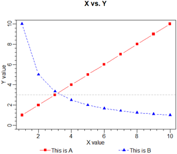
text()可向绘图区域内部添加文本，而mtext()则向图形的四个边界之一添加文本。
text(location,"text to place",pos,...)
mtext("text to place",side,line=n,...)
| 参 数 | 描 述 |
|---|
| location | 文本的位置参数。可为一对x,y坐标，也可通过指定location为locator(1)使用鼠标交互式地确定摆放位置 |
| pos | 文本相对于位置参数的方位。1=下，2=左，3=上，4=右。如果指定了pos，就可以同时指定参数offset=作为偏移量，以相对于单个字符宽度的比例表示 |
| side | 指定用来放置文本的边。1=下，2=左，3=上，4=右。你可以指定参数line=来内移或外移文本，随着值的增加，文本将外移。也可使用adj=0将文本向左下对齐，或使用adj=1右上对齐 |
其他选项：cex、col和font（分别用来调整字号、颜色和字体样式）。
text()常用来标示图形中的点，只需一系列x,y坐标值作为位置参数，同时以向量形式指定要放置的文本。
attach(mtcars)
plot(wt,mpg,
main="Mileage vs. Car Weight",
xlab="Weight",ylab="Mileage",
pch=18,col="blue")
text(wt,mpg,
labels=row.names(mtcars), offset=0.5, #偏移距离
cex=0.6,pos=4, #字体为默认的60%，pos=4位右侧
col="red")
detach(mtcars)
mtcars提供的32种车型的车重和每加仑汽油行驶英里数散点图。每个点右侧标注车辆型号。
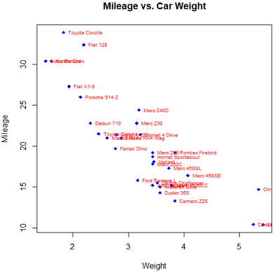
#win下自定义字体
windowsFonts(
A=windowsFont("微软雅黑"),
B=windowsFont("华文行楷")
)
opar=par(no.readonly = T)
par(cex=1.5)
plot(1:3, type="n",ann=F,axes=F,frame.plot=T)
text(2,1.2,"default 默认")
text(2,1.5,family="mono","mono 同宽")
text(2,2,family="serif","serif")
text(2,2.5,family="A","微软雅黑")
text(2,2.8,family="B","华文行楷")
title(sub="学习在R中设置字体",cex.sub=0.5,#字体大小
mgp=c(-1, -0.2, 0) )
par(opar)
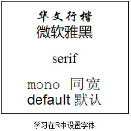
使用类似于TeX中的写法为图形添加数学符号和公示。细节和示例参考help(plotmath); demo(plotmath)。expression()中可以使用的数学表达式，比Latex少，但是比matlab多。
也可以用 plotmath() 函数为图形主体或边界上的标题、坐标轴名称或文本标注添加数学符号。
具体使用是利用text()语句中放入expression表达的数学公式。
#Mathematical Annotation in R
plot(1,2,type="b",ylim=c(1.2,2.1),
pch=21,col="blue",bg="red",cex=2) # 在(1,2)处画一个点
text(1,2,expression(hat(x)), pos=4) # 在(1,2)右加入\hat{x}
#更复杂的公式
formula = expression(italic(Prob) == bgroup("(",atop(n, x),")")%*%p[1]^x%*%(1-p[1])^(n-x))
text(1,1.5,label=formula)
#right: https://stats.idre.ucla.edu/r/codefragments/greek_letters/
set.seed(1) # for reproducible, pseudo-random numbers
h = rnorm(mean = 5, sd = 1, n = 1000)
hist(h, xlab = expression(h),
main = expression(paste("希腊字母, ", mu, "=5, ", sigma,"=1")))
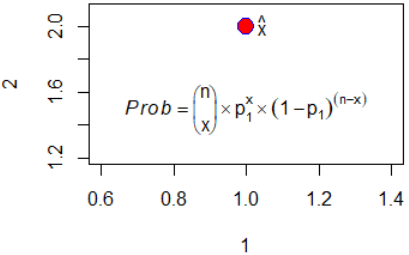
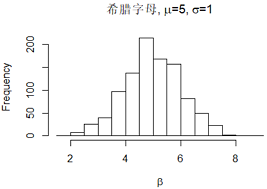
在R中使用函数par()或layout()可以容易的组合多幅图。
par()是使用图形参数 mfrow=c(nrows,ncols) 来创建按行填充的、行数为nrows、列为ncols的图形矩阵。mfcol=c(nrows,ncols)则按列填充。
#示例1
#画图函数
myDraw=function(){
set.seed(1000);plot(rnorm(10),pch="1", cex=0.5)
set.seed(1001);plot(rnorm(10),pch="2", cex=1)
set.seed(1002);plot(rnorm(10),pch="3", cex=1.5)
set.seed(1003);plot(rnorm(10),pch="4", cex=2)
}
par(mar=c(3, 3, 0.5, 0.5))
#横着输出-左图
par(mfrow=c(2,2)) #两行两列，mfrow行
myDraw()
#竖着输出-右图
par(mfcol=c(2,2)) #两行两列，mfcol列
myDraw()
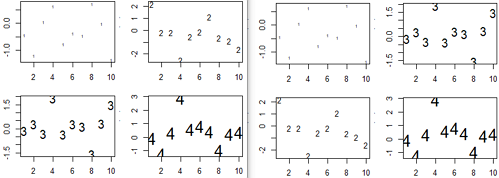
高级绘图函数hist()包含一个默认的标题，可以使用main=""来禁用它，或ann=F禁用所有标题和标签
使用layout()函数更精细的排版
如果页面不均等分隔绘制多图，用layout函数分隔页面。它有四个参数，mat，widths，heights和respect。后三个参数有默认值，示例2我们只设置第一个参数mat。它是一个矩阵，表示绘图区分隔的各部分，相同数字的部分合并成一个绘图区，数字也是它们作图时的顺序。下面的矩阵mat有2行3列，我们看看它绘出的图形：
注意：mat参数的值必需从1-n顺序依次取值，不能有间隔。
#示例2 layout布局
par(mar=c(2, 2, 0.5, 0.5))
#layout布局1-left
mat = matrix(c(1,1,2,3,4,4), nrow=2, byrow=TRUE)
mat
# [,1] [,2] [,3]
#[1,] 1 1 2
#[2,] 3 4 4
layout(mat)
myDraw()
#layout布局2-right
mat = matrix(c(1,2,3,4,4,4), nrow=2, byrow=TRUE)
mat
# [,1] [,2] [,3]
#[1,] 1 2 3
#[2,] 4 4 4
layout(mat)
myDraw()
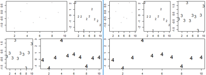
#示例3 使用widths=和heights=两个参数更精确的控制每幅图的大小。
#widths=各列宽度值组成的一个向量
#heights=各列高度值组成的一个向量
#相对宽度可以直接通过数值指定，绝对宽度（以厘米为单位）可以通过函数lcm()来指定。
attach(mtcars)
par(mar=c(4,3, 0.5, 0.5))
mat=matrix(c(1,1,2,3),nrow=2,byrow=T)
#layout(mat) #左图: 默认左右1:1,上下1:1
layout(mat, widths = c(1,3),heights =c(1,2)) #右图: 左右1:3,上下1:2
plot(1:8)
hist(wt)
hist(disp)
detach(mtcars)
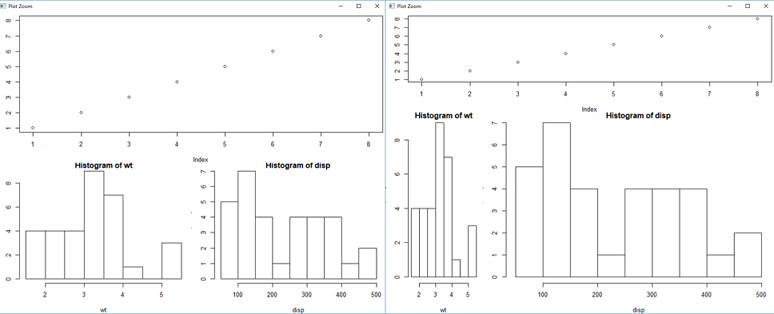
layout()函数能轻松控制最终图形中子图数量和摆放方式，以及这些子图的相对大小。参考help(layout)。
#layout.show()函数用于展示布局
## create single figure which is 5cm square
nf = layout(matrix(1), widths = lcm(5), heights = lcm(5)) #使用lcm()来指定绝对宽高(单位：厘米)
layout.show(nf)
plot(1:5)
可以使用fig=c(x1,x2,y1,y2)的方式将若干图形以任意排布方式组合到单幅图中。
#左下角为(0,0)，右上角为(1,1)。fig=(x1,x2,y1,y2)表示绘图区间
opar=par(no.readonly = T)
par(fig=c(0,0.8,0,0.8)) #fig=参数更精细控制图形布局
plot(mtcars$wt,mtcars$mpg,
xlab="Miles Per Gallon",
ylab="Car Weight")
#top 在上方添加箱线图
par(fig=c(0,0.8,0.4,1),new=T) #添加新图到现有图上，所以要new=T
boxplot(mtcars$wt,horizontal = T,axes=F)
#left 在右侧添加箱线图
par(fig=c(0.6,1,0,0.8),new=T)
boxplot(mtcars$mpg, axes=F)
#顶部文字
mtext("Enhanced Scatterplot",side=3,outer=T,line=-5)
par(opar)
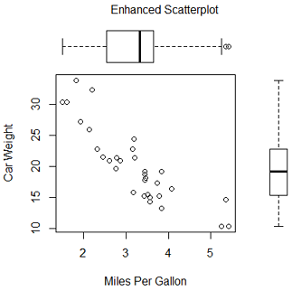